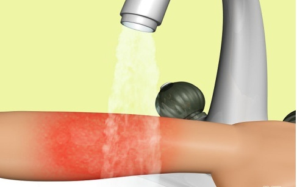
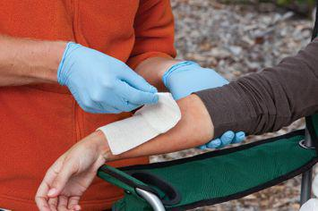

1. Cool Burn
- Immerse in cool water for 10 or 15 minutes.
- 
- Use compresses if running water isn’t available.
- Don’t apply ice. It can lower body temperature and cause further damage.
- Don’t break blisters or apply butter or ointments, which can cause infection.
2. Protect Burn
- Cover loosely with sterile, nonstick bandage and secure in place with gauze or tape.
- 
3. Prevent Shock
Unless the person has a head, neck, or leg injury, or it would cause discomfort:
- Elevate feet about 12 inches.
- Elevate burn area above heart level, if possible.
- Cover the person with coat or blanket.
4. See a Doctor
- The doctor can test burn severity, prescribe antibiotics and pain medications, and administer a tetanus shot, if needed.